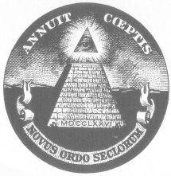

MONEY AND RIGHT LIVELIHOOD

Money is “green energy.” And any energy you work with brings with it its own vibrations. If you are sufficiently evolved to be able to transmute negative vibrations, then it makes little difference where the energy comes from. For most of us, however, we are affected for good or ill by the energies with which we interact. Also, the manner in which you obtain the energy from others affects them. Because we are all interrelated, what affects another person affects you.
The method of gaining your livelihood must not, by its very nature, increase the paranoia and separateness in the world. A dishonest or exploitive venture would be a case in point. Most means of gaining livelihood do not, in and of themselves, increase the illusion of separateness. However, the beings who do the work do it—because of their own level of involvement—in such a way as to increase the illusion. When you are involved in such vocations, then it is your work on yourself which makes the particular vocation a vehicle for bringing man out of illusion and into yoga.
Suitable right livelihood for any specific individual is determined by the totality of forces acting upon him. These forces (vectors) include social, cultural, economic, hereditary, and experiential factors. To hear the way in which the interplay of all these forces determines your right livelihood requires much calming of the mind. The quieter you become the more you can hear.
As you progress with your sadhana you may find it necessary to change your occupation. Or you may find that it is only necessary to change the way in which you perform your current occupation in order to bring it into line with your new understanding of how it all is. The more conscious that a being becomes, the more he can use any occupation as a vehicle for spreading light. The next true being of Buddha-nature that you meet may appear as a bus driver, a doctor, a weaver, an insurance salesman, a musician, a chef, a teacher, or any of the thousands of roles that are required in a complex society—the many parts of Christ’s body. You will know him because the simple dance that may transpire between you—such as handing him change as you board the bus—will strengthen in you the faith in the divinity of man. It’s as simple as that.